Does your cultural identity influence
the habits throughout your life?
Interviews and photography that reveal how people’s cultural identity influence the habits within their routines. Through conducting research on the science behind habit-making, I wanted to learn more about why humans do what we do, and test my hypothesis by interviewing unique individuals.
_claire
Claire’s French background resonates with her when she applies her seasonal perfumes and sports her au naturale makeup, she but admits to identifying more with her "nasty" American half, through her multi-layered “millefeuille” culture.
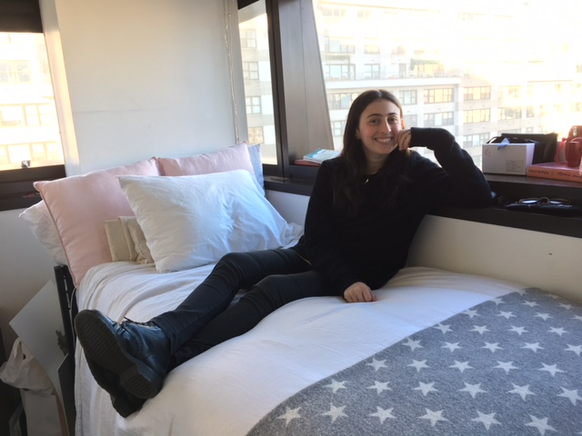
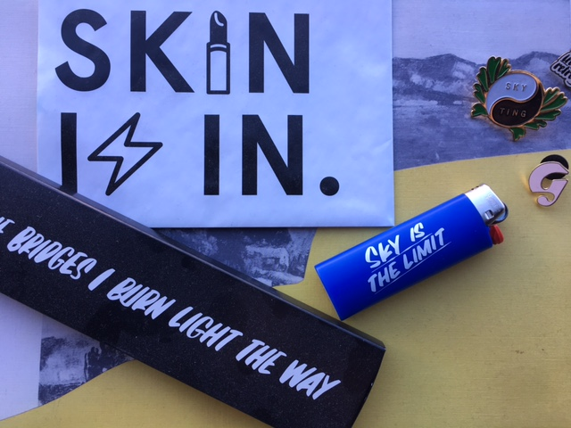
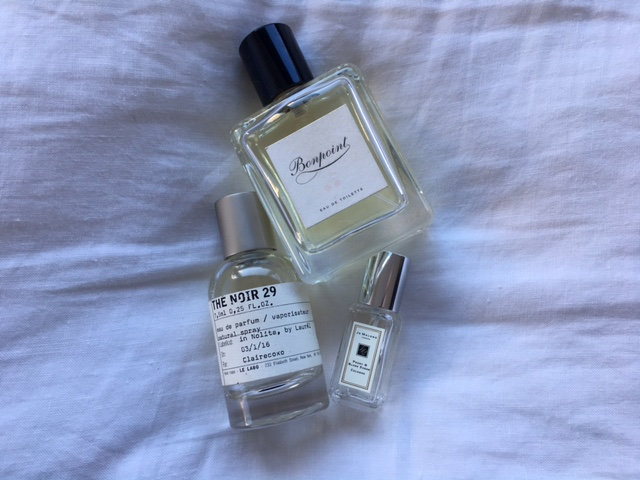
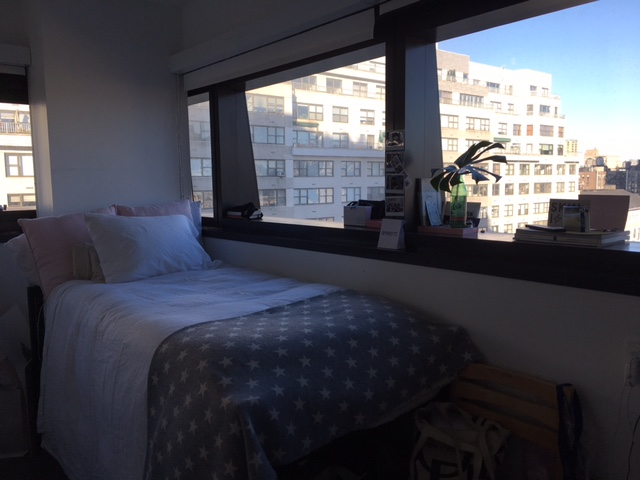
hover & scroll
Q: How many hours of sleep do you get per night?
A: Let's see, I guess it's a wide range. I get about 6-7 hours of sleep a night.
Q: What time do you wake up?
A: I wake up around 7:30 every morning, even though some mornings I don't have class until 3:50. Mostly because I like to get up and go for a run or Pilates, or to finish up some work at a coffee shop called Toby's. I like to order some tea and do homework there until I have class.
Q: How long is your commute?
A: My commute is not really a commute. Depending on the day, I have classes just downstairs or two blocks away. So, it's fairly chill.
Q: What is the first idea that comes to mind when you wake up?
A: I think 'shit!' I have so much work to do, in not enough time. And then it's, 'okay, I need to figure out what the hell I am going to wear.' Honestly, that eats up around 30 minutes every morning. Finally, I think to myself, 'you’ve gotten this far, now make a list of what you need to do, and go out into the world.' Do what you got to do.
Q: What are your responsibilities in the morning?
A: As I'm in a college dorm, my routine is very different compared to more traditional routines. Taking out the trash is a chore that I have to do. I also just have to sustain myself as a human being. I think there's a point where taking care of others should be a priority, but you also have to take care of yourself--especially in a university, it can be easy to forget. It's a lot of pressure to maintain yourself both physically and mentally. As I work as an Editorial Intern at Into The Gloss, I need to make sure that everything is in line for socials and that postings for my school's newspaper are published. A large part of my day is completing tasks for other people.
Q: Is cost a factor in deciding your routine?
A: Oh yeah, I have a budget! I remember last year, I wrote an article on how to eat cheap, within Union Square. It's fucking expensive! So, at that point, I thought that I was going to be eating oatmeal for a week. However, through writing the article, I learned a lot about eating with a budget, while still sustaining yourself. It's important to know the best way to budget yourself. The metro can also steal your money! It's accumulative and can become an enormous expense.
Q: Does anything change once you arrive at school? Do you perceive yourself the same way in your private life as you do in the public sphere?
A: I think that a value of mine that is very important to me, is being your honest, truest self. I think people should not be scared of being about 45% vulnerable because that is how you make stronger, more trustworthy, open relationships. If I'm a shit-show, everyone will know it. Like the other day, this girl told me that I looked like I had my shit together, and I said, 'are you fucking kidding me?' and I listed her all of the frustrations in my life right now. We need to be okay with talking about things that are on our minds; honesty leads to progress.
But also, that needs to be taken with 'a grain of salt' because there's obviously people that are not necessarily trustworthy enough to handle you in your truest, most vulnerable self.
Q: What is your cultural identity?
A: My culture is layered, kind of like a “millefeuille.” I can tell you that I question myself: 'who is Claire Cohen?' all the time. I could tell you my exterior traits, such as my brown hair and blue eyes, but there’s more to it. I think people think that the culture is an integral part of who they are. With that, I’m Jewish but it's not a culture that I identify with, in the least. I think I share both habits from the French and American culture. My mom is French-American and my dad is French-Moroccan-Canadian. I get my French influence the most from my Parisian grandmother. She has this amazing library in her home, including a story she worked on with Leonard Bernstein.
As a French woman, I make my room and bed pristine every day, photo-shoot ready. In terms of beauty, I am much more of a French woman. I don’t contour my face with heavy, cakey powders. Instead, I strive for a more natural look. Perfume! Perfume is another part of me that is very French. I have a different perfume for all the seasons.
However, I would say that I identify much more with my American side than the French. When I went to the Lycée, it did not go well for me because they expected things of me that I was incapable of delivering--there was no room to grow. For a really long time, I resented that part of myself. I felt so small and incompetent. But when I came to Calhoun, this part of me that was seen as a weakness, became a cool, unique patch I could wear. But I’m most definitely not the idealized 'French woman' because it's such a loaded concept. She’s a woman who is always effortless, chic, doesn’t want to wear makeup, and wakes up to put on her granny-panties and everyone still wants to fuck her. But, it's all false. French women are hustling as much as American women are, and they are glamorized because they inhabit this “romance” culture. I would definitely say that my ambitious, strong, and nasty American side of me got me this far.
music: alaska, maggie rogers
"Not sure why, but I feel like this song represents me best."
_heather
As an adopted Latina, Heather struggled to identify with a culture and feels that this internal tension plays a large role in who she is today. However, Heather still invites the strong Indian and Hindu influence from her adoptive father.
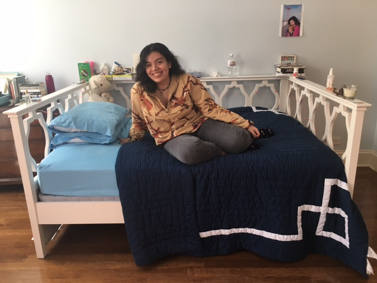
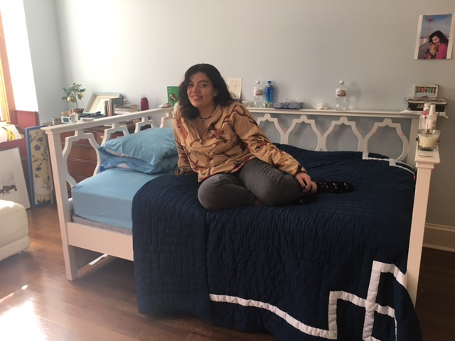
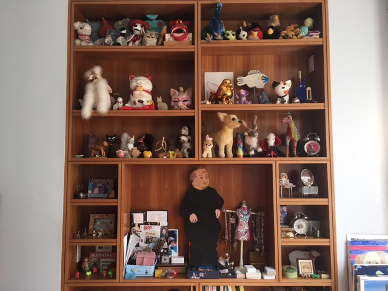
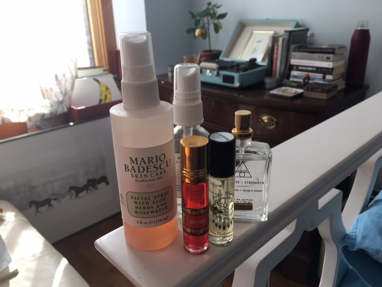
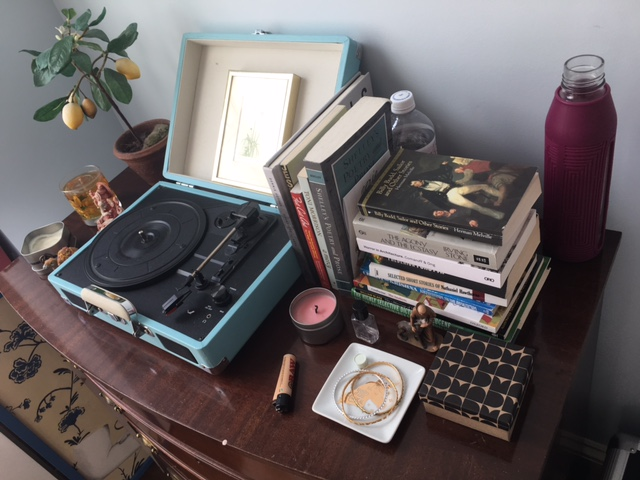
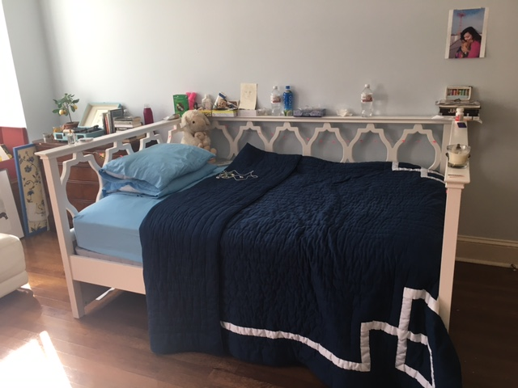
hover & scroll
Q: How many hours of sleep do you get per night?
A: On average, I'd say anywhere between 4 to 5 hours.
Q: What time do you wake up?
A: To arrive on time, I usually wake up at around 7:30 or earlier. I get out of bed, wash my face, moisturize, brush my teeth (and retainers), kind of half finger-comb my hair, put on concealer and do my eyebrows, then get dressed. That's usually all I have time for because I wake up so late.
Q: How long is your commute?
A: It's about 10 minutes, but if I'm really rushing I can get there in about 8 minutes.
Q: What is the first idea that comes to mind when you wake up?
A: How much I do not want to go to school.
Q: What are your responsibilities in the morning?
A: The only task I have to do is let my dog out to pee, but other than that, my world is my oyster.
Q: Is cost a factor in deciding your routine?
A: To an extent, yes. Out of my entire family, I am the most frugal. I spend the least amount of money. I definitely take expenses into account, but it isn't out of necessity or restriction.
Q: Does anything change once you arrive at school? Do you perceive yourself the same way in your private life as you do in the public sphere?
A: Yeah, I think so. I do not monitor my personality, or at least as much as I should. I really behave the way I do in my private life as I do public.
Q: What is your cultural identity?
A: Well, in terms of like my life and my relationships, it has always been very relaxed between my parents and I. There's always been a sense of trust. I have a lot of freedom throughout my life and exploration. Growing up in a place like New York, I have been surrounded by a lot of different people and I have become attached to the city. I have this relationship with the city itself. It has cultivated this personal growth within me, through new exposure. I definitely think that my culture has influenced my habits. I've grown really familiar to scents, like sandalwood and rose, that I use every day. I just love having that familiarity. Also, I really value animals, and I think that has incorporated itself into my life through my cultural background. Also, being adopted, I don't think about it on a daily basis, but it definitely plays a role in my identity. I think about how much of my identity is Latina, and how much of it is Indian, the side of my adoptive father. It does play a role in where I align my culture and what I identify with. Overall, identifying with a culture has always been a very confusing area for me. My dad's whole family is Indian and Hindu, so being sort of around that influence is defining in a way. I do think that this sort of internal tension is a very prominent part of who I am.
music: light my fire, the doors
"This soundtrack was super prevalent during Freshman year, which was a time of extreme growth for me."
_jake
Jake, who recently came out as gay, understands how it feels being oppressed and identifies best as a New Yorker, with a Californian influence.
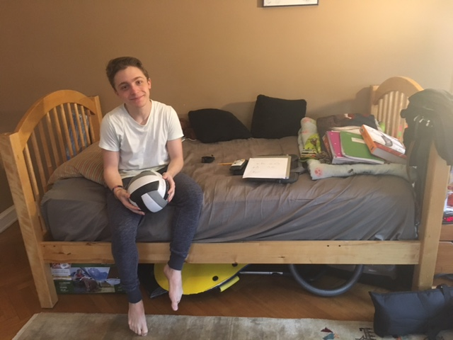
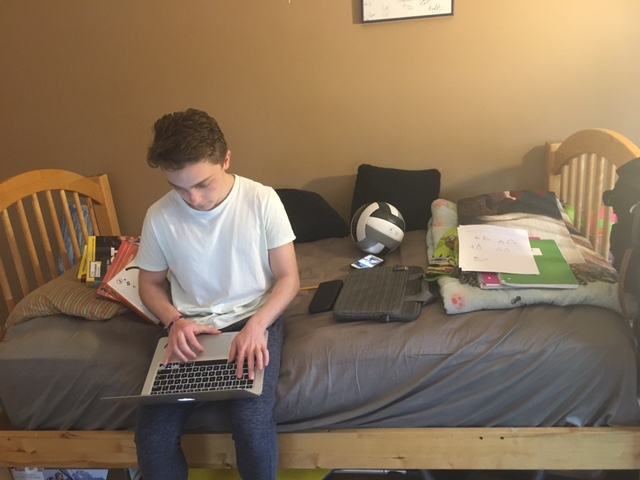
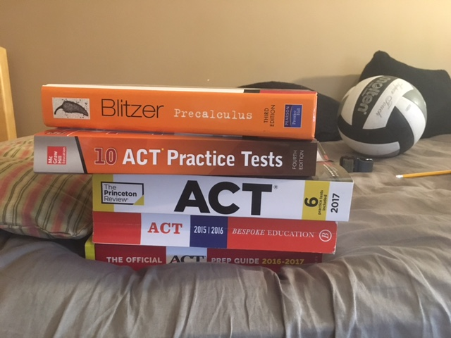
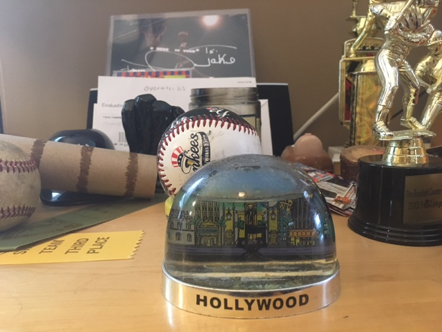
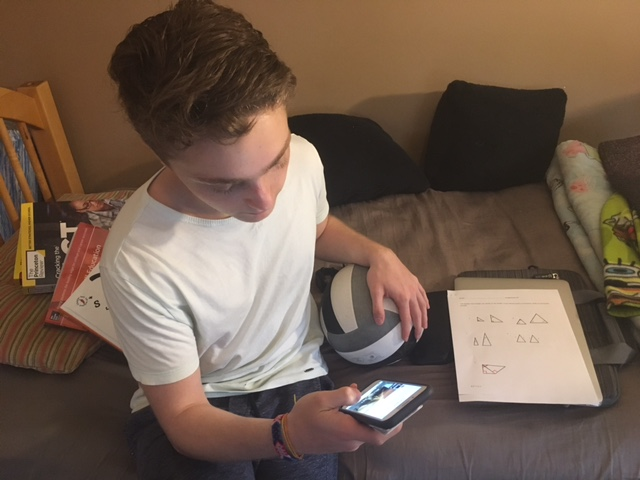
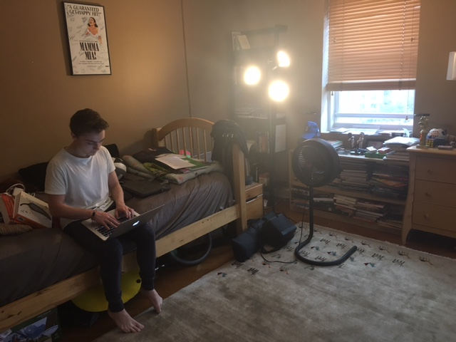
hover & scroll
Q: How many hours of sleep do you get per night?
A: It varies. When I'm feeling really productive, I get about 7-8. Usually, I get about 4-5.
Q: What time do you wake up?
A: To arrive at school at 8:30, I wake up at seven. But when I want to meet Taylor early for precalculus, I wake up around 5:45.
Q: How long is your commute?
A: Well, I live in Washington Heights. So, by car, 30-40 minutes. By train, about 45 minutes.
Q: What is the first idea that comes to mind when you wake up?
A: Ugh, I want to be sleeping right now.
Q: What are your responsibilities in the morning?
A: I don't really have any chores. I wake up, I shower (for way too long), throw on clothes, brush my teeth, put on deodorant, gel my hair, and pack my volleyball gear (if I have it). After, I have to meet my brother and dad by a certain time. They usually get the car out of the garage, and I have to meet them at the street corner.
Q: Is cost a factor in deciding your routine?
A: No, it's not. In terms of transportation, it's free both ways. By car, it's free. By train, I have the student MetroCard, so it's free as well.
Q: Does anything change once you arrive at school? Do you perceive yourself the same way in your private life as you do in the public sphere?
A: In public, I get a burst of energy and I am much more aware of my behavior. Usually, when I get out of the car when we arrive at school, my posture sort of straightens.
Q: What is your cultural identity?
A: I am Jewish, but I don't practice it all. We celebrate both Hanukkah and Christmas. I'm a bad Jew! I'm also gay, which does play a role. 'Coming out' wasn't really a process--I just decided to stop denying it. I didn't think I needed to post or announce anything. I mean, I knew all along. Being gay, it makes me understand oppression. My sexuality is oppressed. I understand why American people are so angry sometimes. Another part of my culture is being from New York. As a New Yorker, I see the world differently. I feel like New Yorkers have a different sense of street smarts. Also, California is a big part of who I am. I used to live there and moved when I was two, and I go out there every summer. I always relate my life to being a New Yorker with a Californian influence. New Yorkers are very intense and I can relate. Everyone always needs to get somewhere, and I am always in a rush. Even when I am not in a rush, I get anxiety because I'm not stressed. For example, this Mod is very easy for me. I only have some geometry homework and Junior Workshop, but I'm always thinking, 'am I missing something?' I get stressed out when I have nothing to do. For example, I think of myself as very independent. Since I was thirteen years old, I've gotten myself around places.
music: super rich kids, frank ocean
"I love this song, only because I'm not rich, but I am surrounded by really rich kids at my private school. Simply put, I am surrounded by the 'Super Rich Kids,' but I'm not one of them."
_potokers
The Potokers thrive within their "twin culture" and have mastered the art of alteration. Even though the twins are genetically identical, the Potokers value individualism.
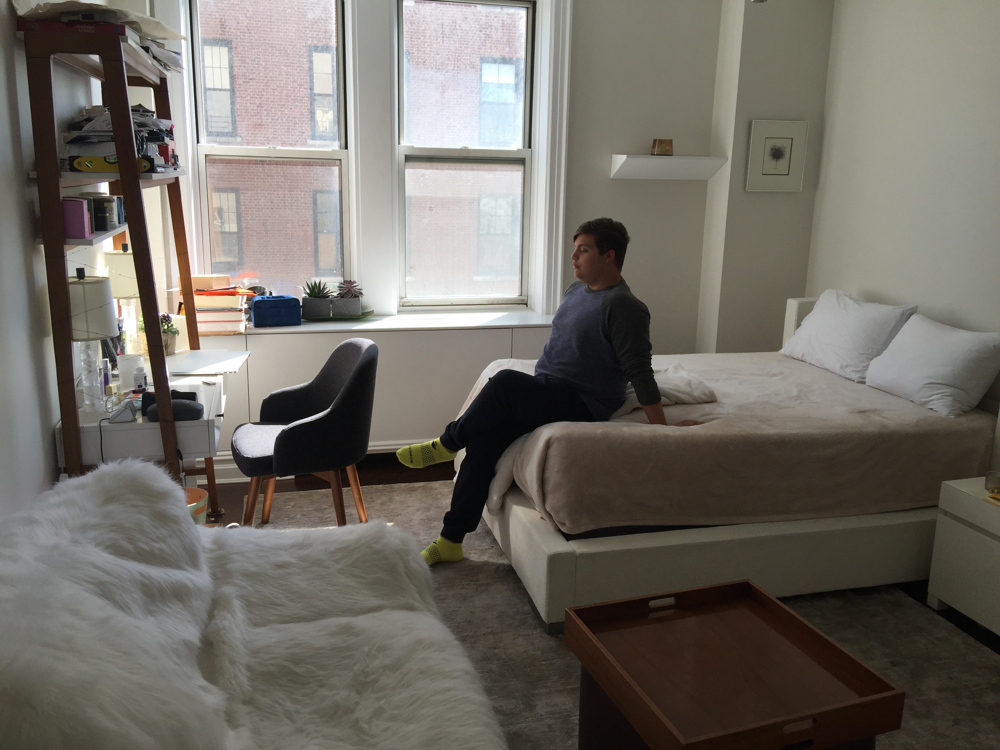
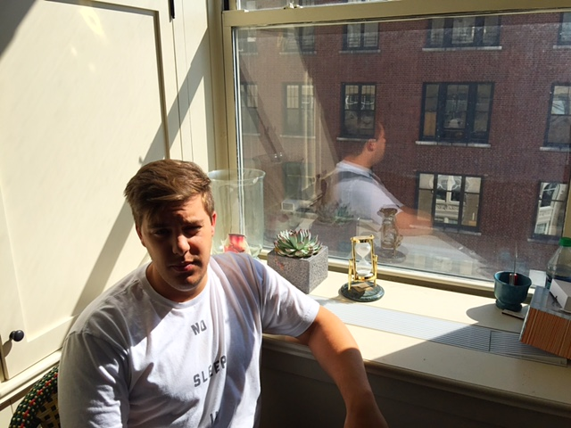
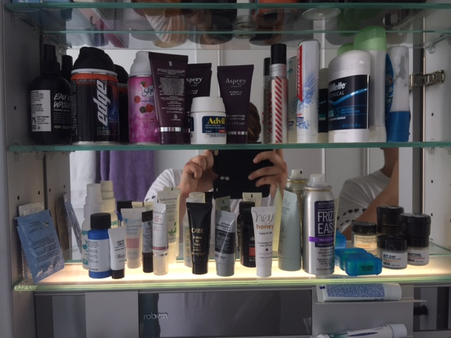
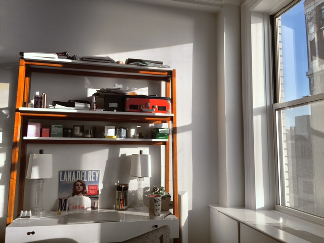
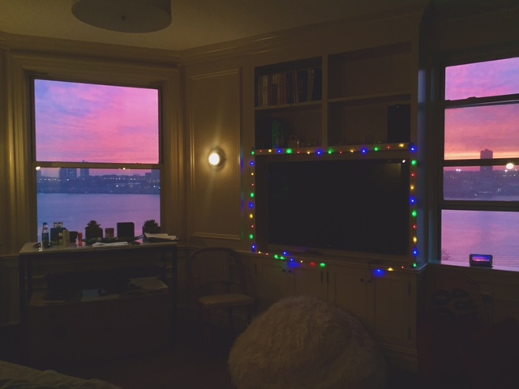
hover & scroll matthew: (M) + nick: (N)
Q: How many hours of sleep do you get per night?
M: I would say that I usually get around six to eight, depending on the day.
N: Same.
Q: What time do you wake up?
M: Well, we have this system where one of us get in the shower by 7:30. If that actually happens, then the other person gets in the shower afterward and we leave around 8:00.
N: Yeah, but it definitely depends on the day.
M: If one of us forgets something, then it's game over.
Q: How long is your commute?
M: On average it's about--
N: Seven minutes.
M: Yeah, seven minutes. If we're running, it's around five.
Q: What is the first idea that comes to mind when you wake up?
N: I'm usually very hungry.
M: I usually think of the class I have first period or the homework I should have done.
Q: What are your responsibilities in the morning?
M: Our parents walk the dog in the morning, but we walk it at night.
N: So, that's the compromise.
M: Our only real responsibility in the morning is getting ourselves to school on time.
Q: Is cost a factor in deciding your routine?
N: Fortunately, we just have to walk.
M: Yeah, fortunately, cost is not a factor because we live so close.
Q: Does anything change once you arrive at school? Do you perceive yourself the same way in your private life as you do in the public sphere?
M: Yes, I think that my private-self is a little less reserved than I am at Calhoun. I am fairly outgoing at Calhoun, but when it's just Nick and I it is a little bit different.
N: I definitely think, though, that first period is when I do hold my real-self back, but as the day goes on, I get more into it and I speak my mind.
Q: What is your cultural identity?
M: I would say that our culture revolves around--
N: I think our culture revolves around being twins. We're always keeping each other in check.
M: Our culture is revolved around celebrating our independence, but as we are twins we are unified. For example, in the morning, he'll wait for me, but after a certain time, he's gone! He's not waiting for me if I am slowing him down. There's a balance of respect. As twins, I think we go through different stages of finding that balance--letting him do his own thing, but also feeling connected. I think that being twins, unlike with a younger sibling where you're kind of your entity, we feed off of each other--it's a special dynamic. Our routines are both different, but they relate to and depend on each other. Again, there's only one shower and one car for driver's ed, so we have to make it work. Yeah, so within our "twin-culture" we have learned to master the art of alternation. I think that's a big part that affects our relationship and routine. Growing up, there wasn't this stated expectation for each of us, as we don't have older siblings. However, people definitely have an easier time equating and comparing us as twins. Our parents, don't compare us all the time, but they definitely resort to "come on, Matt, Nick did it, so you can do it too!"
N: Yeah, but I also think that Calhoun played a really prominent role in helping us figure out our own individuality. Let us be together in the same school, in the same classes even, but also enable us to grow and develop our own ways.
M: We grow independently, but simultaneously.
music: get it together, drake
"We know that this song is about a girl and guy, but I see each other in it. We sometimes just need to get our shit together, so we can be semi-civil!"
_raphael
Raphael, growing up in a Nigerian household, believes that his faith, Christianity, plays a very prominent role in his development and perspective on life as an adolescent.
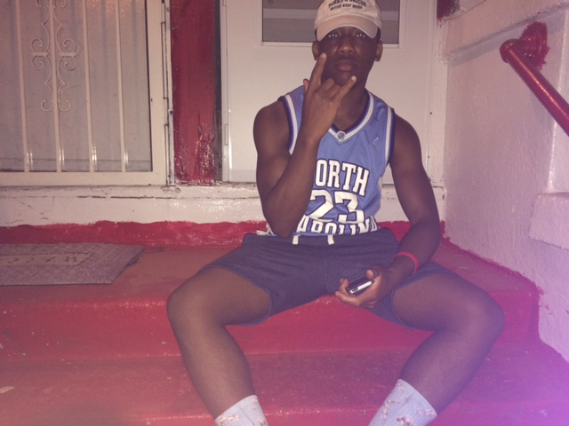
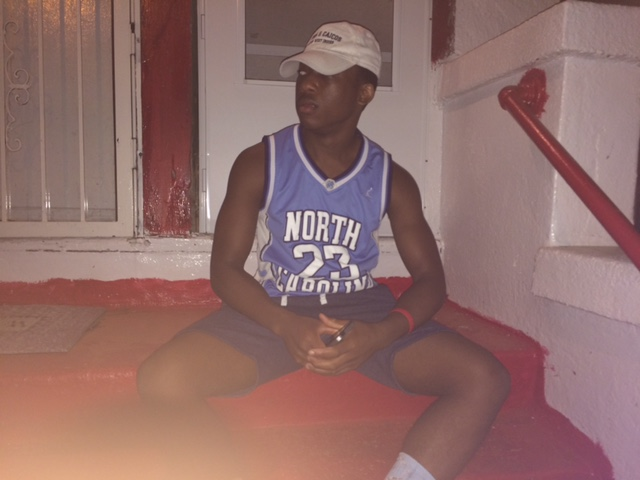
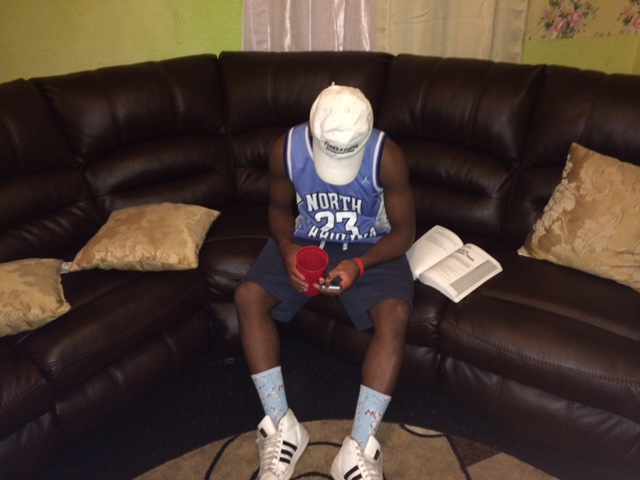
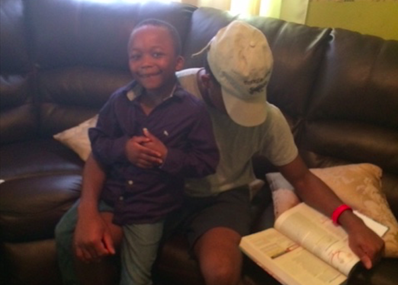
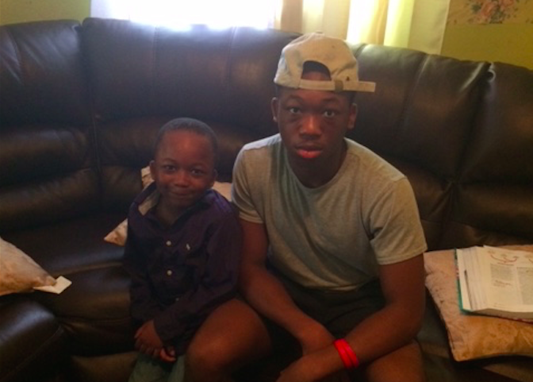
hover & scroll
Q: How many hours of sleep do you get per night?
A: I get around, like, eight hours.
Q: What time do you wake up?
A: I have to wake up at six to arrive on time to school. As I live in the Bronx is takes awhile, and I also have other family responsibilities too.
Q: How long is your commute?
A: From Wakefield, it takes about an hour and a half by train.
Q: What is the first idea that comes to mind when you wake up?
A: I'm gonna get lit today, and I am going to make the most out of my day--it will be a good day!
Q: What are your responsibilities in the morning?
A: I have to make sure that my little brother, Wisdom, is showered and ready to go. I also have to make sure that the rest of my siblings, Devine and Faith, are dressed and are at school on time.
Q: Is cost a factor in deciding your routine?
A: Every morning, I buy a bacon-egg-n-cheese with an Arizona drink. I eat breakfast on the train.
Q: Does anything change once you arrive at school? Do you perceive yourself the same way in your private life as you do in the public sphere?
A: I'm the same everywhere. I stay true to myself.
Q: What is your cultural identity?
A: Well, my Nigerian origins do play a role, but I do not think that it represent me. However, I do acknowledge that my roots are based in Nigeria. Nigerians tend to be strict and pressuring, and I think that this plays a role in my perspectives and priorities. Those Nigerian values are still within me--they're part of my makeup. Also, I go to church every Sunday. My faith influences how I think about life, my family, and myself. I would say that religion brings the Nwadike family closer. My religion influences how I carry myself and my decision-making, in general.
music: location, playboi carti
"This song brings me back to where I grew up."
hover & scroll
_methodology
When I was given the opportunity to create a project based on my own interests and passions, I found it very difficult settling on one topic. I began to dissect my own identity to gain a more thorough understanding of the unknown. After further brainstorming, I began to formulate my question: Does your cultural identity influence the habits throughout your life? Being Franco-American I began my research by reflecting on my own habits throughout my daily routines. As an Upper West Sider, who lives with her French mother and American father, I began to question if I identify as a “melting pot” of the two nationalities, and if so, does the fusion of these two cultures influence my own growth and habitual development?
I explored various platforms, including case studies, newspaper articles, videos, magazines, and websites/blogs. Rather than searching for what I wanted to conclude, I enabled my curiosity to kindle my research. As a result of conducting thorough research, I was able to enter the interviewing process educated, yet open-minded. In designing my questions, I decided to ask the same questions to every candidate. The questions, which were created to be the constant variables throughout the variations, were broad enough to stimulate genuine conversation, but also personal, guiding the candidate in deeply reflecting on their own cultural identity. As a white, privileged Upper West Sider who was asking my diverse set of candidates very intimate questions about their past and present, I was very ethically strategic in establishing an accepting and professional atmosphere.
To showcase my interviews and photographs of my candidates, I did not want to resort to web templates. Instead, I coded my project from scratch using CSS and HTML to reveal my candidates’ “slices of life.” In addition to my research about cultural identities, I also searched for the best coding techniques to execute my vision. When envisioning my website, I knew I wanted it to be sleek, but also have a very creative appearance. Throughout the website’s creation, I pushed myself to venture into new coding techniques that were unfamiliar. Once I had established my “wire-frame” for my website, I decided that I wanted to present the interviews in a unique way to accompany the powerful photography. The internal scroll functionality and cluster of photographs are very user friendly, as they work on all platforms (mobile, tablet, laptop, and desktop). Additionally, the audio files were selected by each candidate, when asked which song represented them best. Under the audio files, I provided a small excerpt from the interview to provide context.
_drivers
Throughout the interviews, I began to realize that “culture” seems to have a religious connotation, however, it doesn’t have to commit to generalization. During my interview with educator Hilary North, her explanation complied with my own understanding: “For me, culture is the most bare-bones way of describing how humans sort of organize ourselves and the customs, norms, traditions, behaviors, and values that we learn, over the course of our lifetime (which are very dependent on all different kinds of factors, such as languages, geography, or nationalities). Culture is the what in humans do, and the why.” (Interview, Hilary North) Culture can be partnered with religious affiliation or origins, but it can also be created based on personal values and expression.
Anatomically, habit-making takes place in a region of the brain called the basal ganglia, which takes behavior and converts it into an automatic habit. Habits develop through a process that phycologists call the Habit Loop: “Over time, this [habit] loop—cue, routine, reward, cue, routine, reward—becomes more and more automatic. Habits aren’t destiny… The reason the discovery of the habit loop is so important is that it reveals a basic truth: When a habit emerges, the brain stops fully participating in decision making. It stops working so hard, or diverts focus to other tasks… Without habit loops, our brains would shut down, overwhelmed by the minutiae of daily life.” (Duhigg, 13) Since the Habit Loop ultimately establishes routines, cultural elements inevitably influence development. Identity and habit are conceptually discrete but have a significant impact on growth.
Ever since arriving at Calhoun in the ninth grade, I was shocked by how music can play such a pivotal role in a person’s development. “There is evidence that a preference for things that sound familiar is a product of your neurology. Scientist have examined people’s brains as they listen to music and have tracked which neural regions are involved I comprehend aural stimuli listening to music actives numerous areas of the brain, including the auditory cortex, the thalamus, and the super partial cortex. The areas that process music, in other words, are designed to seek out patterns and look for familiarity… Our brains crave familiarity.” (Duhigg, 202) Within my interview with Hilary, she expressed a similar fascination with the effect of music on development: “For me, one of the fascinating facets of culture is how babies are basically blank slates in a cultural perspective. But again, that can be argued against because babies can be exposed to cultural experiences in utereau; hearing the rhythm of music, the way that their mother is speaking, the language, or intonation can impact the baby, even before they're born. Yeah, but in theory, babies do not need to learn how to be human, but they need to learn how to be culturally informed. From day one, babies are learning to be their particular brand of human.” (Interview, Hilary North) Therefore, I decided to incorporate music within my website to reinforce the affect culture has on the development of habits.
_conclusions
From the research and interviews I have conducted, I have concluded that people’s habits are heavily influenced by their cultural identities. Claire’s French background resonates with her when she applies her seasonal perfumes and sports her au naturale makeup, but admits to identifying more with her "nasty" American half, through her multi-layered “millefeuille” culture. As an adopted Latina, Heather struggled to identify with a culture and feels that this internal tension plays a large role in who she is today. While inviting the strong Indian and Hindu influence from her adoptive father, Heather also identifies well with the city, her connection with animals, and familiar scents, such as sandalwood and rose. Jake, who recently came out as gay, understands how it feels being oppressed and identifies best as a New Yorker, with a Californian influence. The Potokers thrive within their "twin culture" and have mastered the art of alteration. Even though the twins are genetically identical, the Potokers value individualism. Raphael, growing up in a Nigerian household, believes that his faith, Christianity, plays a very prominent role in his development and perspective on life as an adolescent. Having this cultural awareness enables us to not only learn more about ourselves, but also understand the variations within our society.
hover & scroll
_sources
"Beauty Tips, Trends, And Product Reviews." Into The Gloss. N.p., n.d. Web. 29 Apr. 2017.
Clear, James. "How Long Does It Actually Take to Form a New Habit? Backed by Science."James Clear. N.p., 10 Feb. 2017. Web. 29 Apr. 2017.
Crist, Carolyn. "On the Mind: Make Your Habits Work for You." Pastemagazine.com. Paste Magazine, 3 Jan. 2017. Web. 29 Apr. 2017.
"Cultural Identity." Interview by Hilary North. Junior Workshop: Cultural Identity. Sara Barker, 2017. Web. 29 Apr. 2017.
Duhigg, Charles. The Power Of Habit. N.p.: Random House USA, 2014.
G, Judah. "Forming a Flossing Habit: An Exploratory Study of the Psychological Determinants of Habit Formation." US National Library of Medicine National Institutes of Health. Pub Med, 2013. Web. 29 Apr. 2017.
Gardner, B. "Experiences of Habit Formation: A Qualitative Study." US National Library of Medicine National Institutes of Health. Pub Med, 2011. Web. 29 Apr. 2017.
Gardner, B. "Habit, Identity, and Repetitive Action: A Prospective Study of Binge-drinking in UK Students." US National Library of Medicine National Institutes of Health. Pub Med, 2012. Web. 29 Apr. 2017.
Gardner, B. "Making Health Habitual: The Psychology of ‘habit-formation’ and General Practice." US National Library of Medicine National Institutes of Health. PMC, 2012. Web. 29 Apr. 2017.
Gordon, Eric. "Making a Habit Out of Engagement: How the Culture of Open Data Is Reframing Civic Life." Beyond Transparency, 2011. Web. 29 Apr. 2017.
Gross, Terry, and Charles Duhigg. "Habits: How They Form And How To Break Them." NPR. NPR, 05 Mar. 2012. Web. 29 Apr. 2017.
Stanton, Brandon. "Humansofnewyork." Humans of New York. N.p., n.d. Web. 29 Apr. 2017.
Velasquez-manoff, Moises. "What Biracial People Know." The New York Times. The New York Times, 04 Mar. 2017. Web. 29 Apr. 2017.
Vognar, David. "How Important Is Culture in Shaping Our Behavior?" The Huffington Post. TheHuffingtonPost.com, 01 Aug. 2012. Web. 29 Apr. 2017.
"Being Franco-American I began my research by reflecting on my own habits throughout my daily routines. As an Upper West Sider, who lives with her French mother and American father, I began to question if I identify as a 'melting pot' of the two nationalities..."
 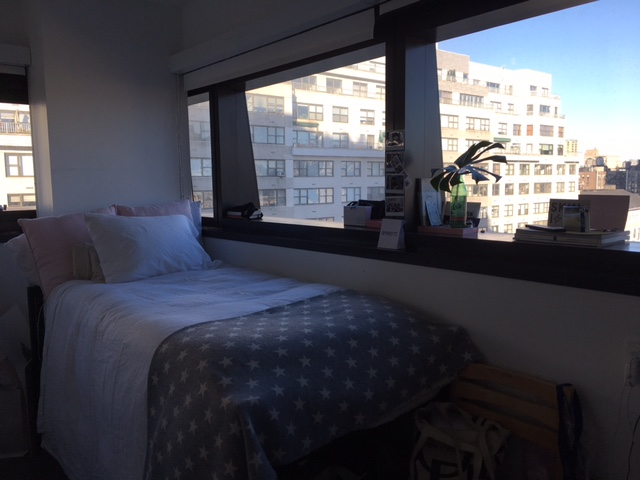
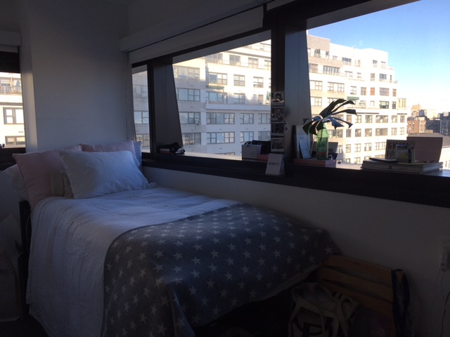